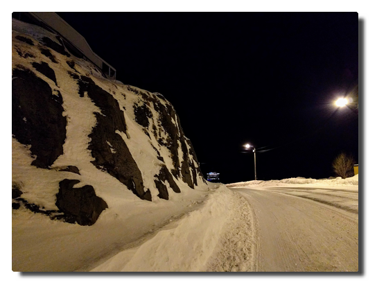
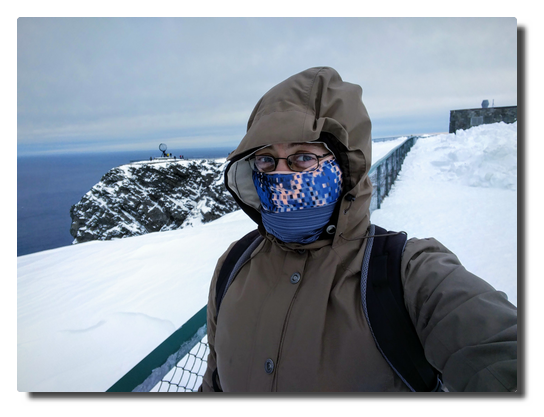

Love Boat - The Real Story. Honningsvåg
| Anke (encarsia) | Auch verfügbar in: English
Tag 6. Das Ende der Welt
Der vergangene lange Tag bringen mich dazu, bis 7 Uhr auszuschlafen. Wir werden noch bis zum Abend auf See unterwegs sein und dann im Hafen von Honningsvåg übernachten.
Alle sind nach den Erlebnissen bester Stimmung. In unserer Reisegruppe ist aktuell niemand seekrank und auch unser Jüngster scheint sich nach Anlaufschwierigkeiten etwas eingelebt zu haben, er klatscht zum Frühstück das Personal ab und verabredet sich für später im Kids Club.
 |
|---|
| Nordkapumfahrung in mystischem Licht |
Am Nachmittag passieren wir das Nordkap bei Sonnenuntergang. Die Sicht ist klar und man kann von weitem die Nordkaphalle und den Globus sehen. Ich stehe fast eine Stunde auf Deck 6 und genieße die Aussicht.
Später wird es windig und es schneit. Die nächtlichen Nordkaplandausflüge werden abgesagt, weil die Straße aufgrund des Schneegestöbers nicht freigegeben ist. Ob der Ausflug morgen klappt, ist noch unsicher.
K. und ich schlendern durch das leere Honningsvåg. Wir schauen uns genauer das Schiff an und sehen: hinter unseren Kabinen befindet sich der Crew-Nachtclub, das erklärt einiges...
|  |
|---|
| Honningsvåg im Schnee. Ein Schiff. |
Dann grüne Schleier. Polarlichter. Als wir aufs Schiff zurückkehren, geht das Spektakel richtig los. Grüne, auch ein wenig rote Nordlichter tanzen stundenlang für uns am Himmel.
 |
|---|
 |
| Not all heros wear capes. Bamse, the canine war hero. |
Tag 7. Nordkap
Es liegen zwei perfekte Polarlichtkreuzfahrttage hinter uns. Alles, was nun noch folgt, ist nur noch Deko auf dem Sahnehäubchen.
Es geht auf zum Landausflug zum Nordkap, das wir bereits gestern von der Wasserseite zu sehen bekamen. Dort oben war es kalt und windig und die Sicht war klar und so war der Ort auch ohne Mitternachtssonne definitiv den Besuch wert.
|  |
|---|
| Hilsener fra Nordkapp! Touristenlevel over 9000! |
Gegen Abend wird der Seegang wieder rauher und so lasse ich den Tag gemütlich in der AIDA Bar ausklingen.
 |
|---|
| Es ist alles so furchtbar... |
Kommentare
Comments powered by Disqus